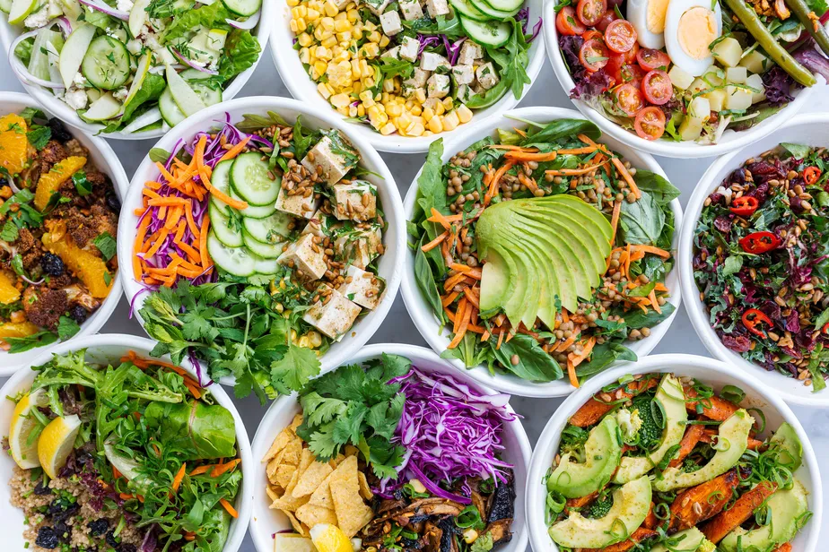

.png)
Cozinha Vital
Saladas com Proteínas

- Salada de Frango com Melão e Lima da Pérsia: uma mistura de sabores marca essa salada. Você tem o salgado do frango, o doce do melão e o toque cítrico da Lima da Pérsia. Por fim, um molho à base de iogurte e mel.
- Salada Waldorf com Atum: salada elegante e rica em sabores, conta com alface americana, maçãs verdes, salsão, nozes, uvas-passas e atum. Por fim, ainda tem um molho de Iogurte Natural Integral e azeitonas.
- Salada Agridoce: salada de alface americana, cebola roxa, manga e frango em tiras, com molho de vinagre balsâmico, azeite, MAGGI Fondor, mel e gergelim uma delícia. Ela também poderia entrar na categoria abaixo, já que conta com manga entre seus ingredientes.
- Salada Tropical: além das folhas, essa salada ainda conta com peito de peru e abacaxi. Uma ótima combinação.
- Salada de Couve de Bruxelas com Molho de Mostarda: a couve de Bruxelas ganha a companhia de ervilhas frescas e tomate cereja nessa salada, que é finalizada com um saboroso molho de mostarda dijon.
- Salada Verde Meu Segredo: com direito a alface, agrião, rúcula, tomate cereja e palmito, essa salada verde é uma ótima opção para quem está com pressa e não tem muito tempo para preparar a refeição.